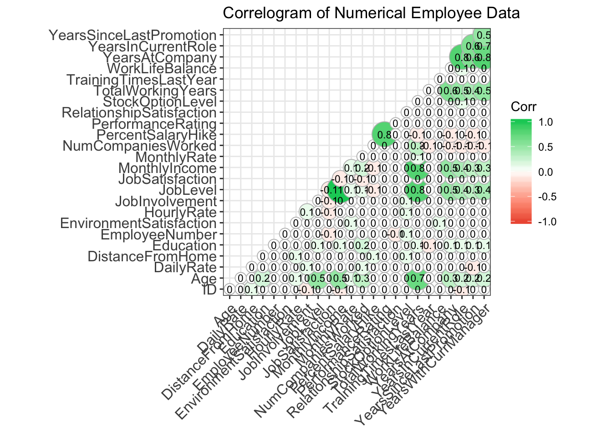
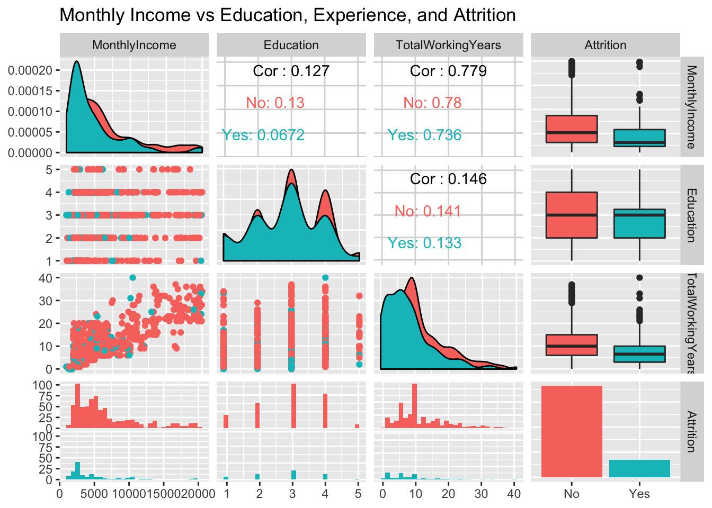
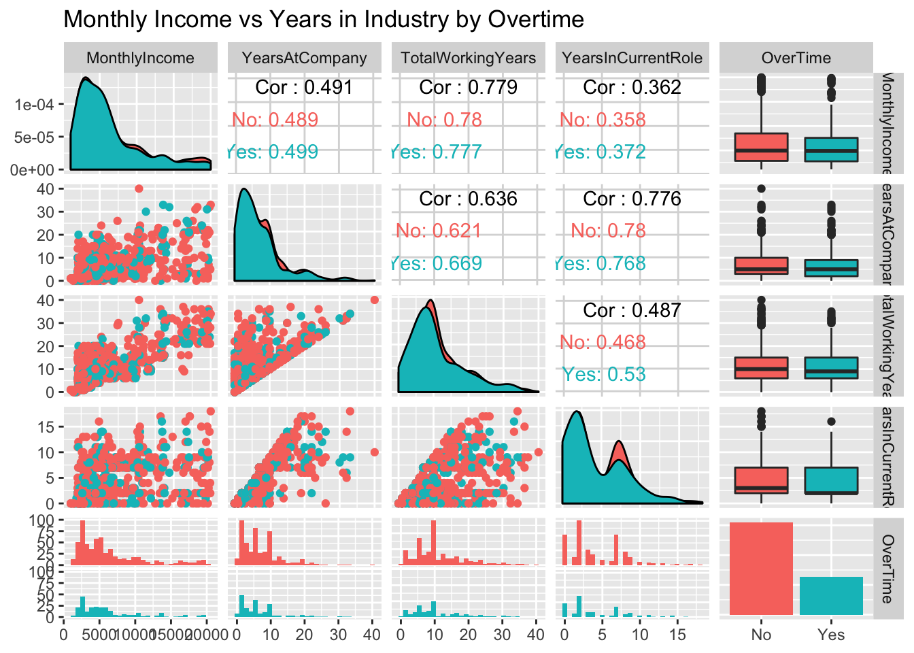
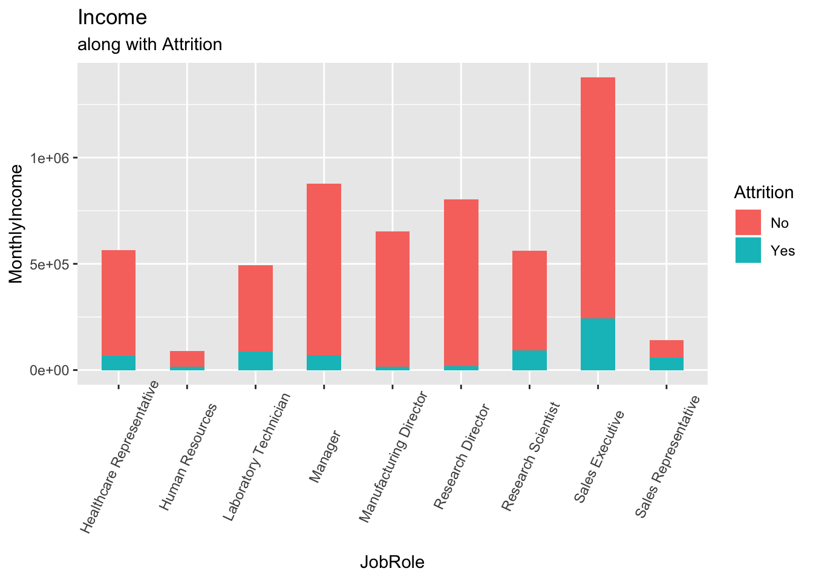
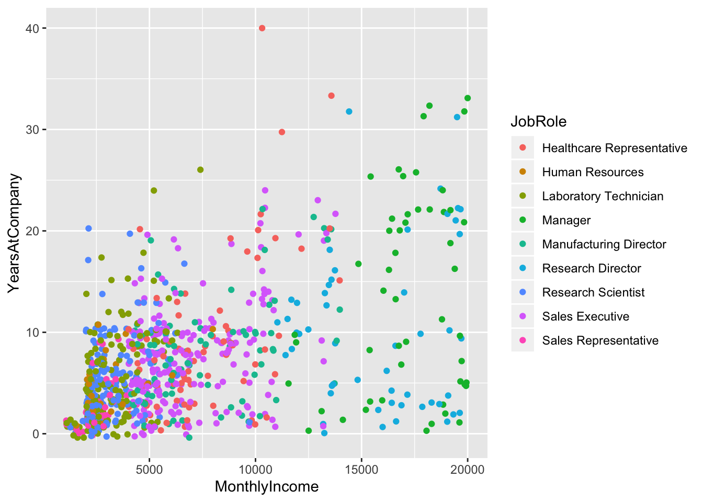
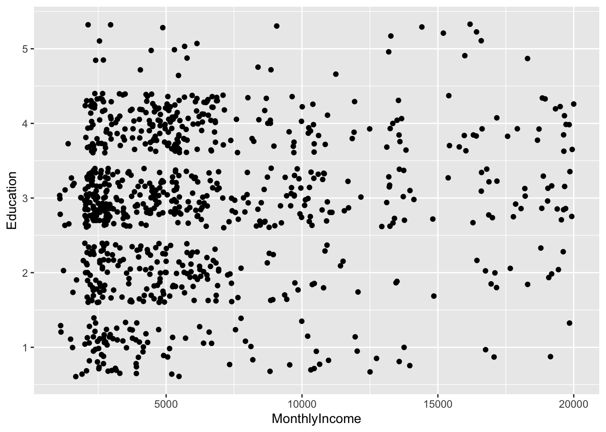
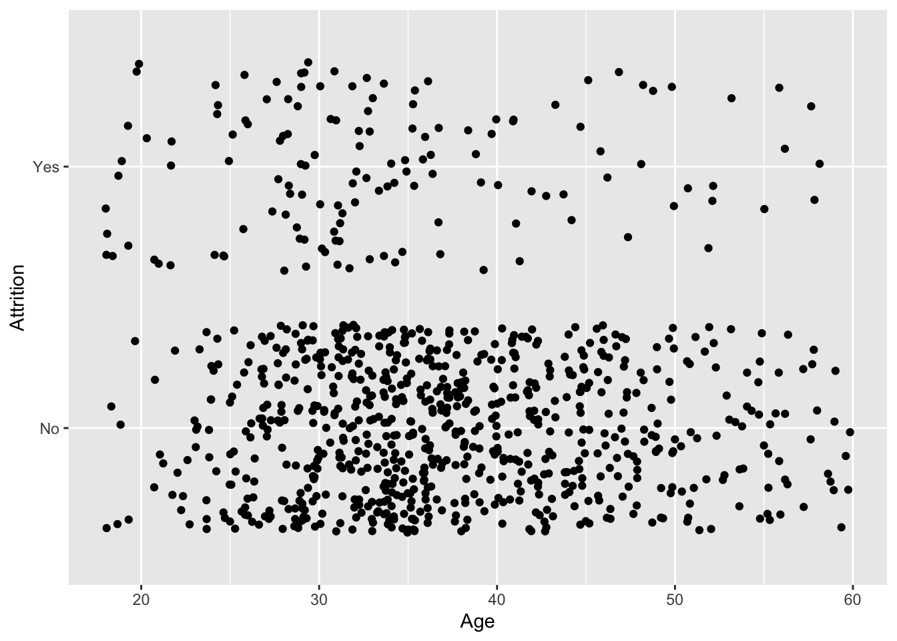
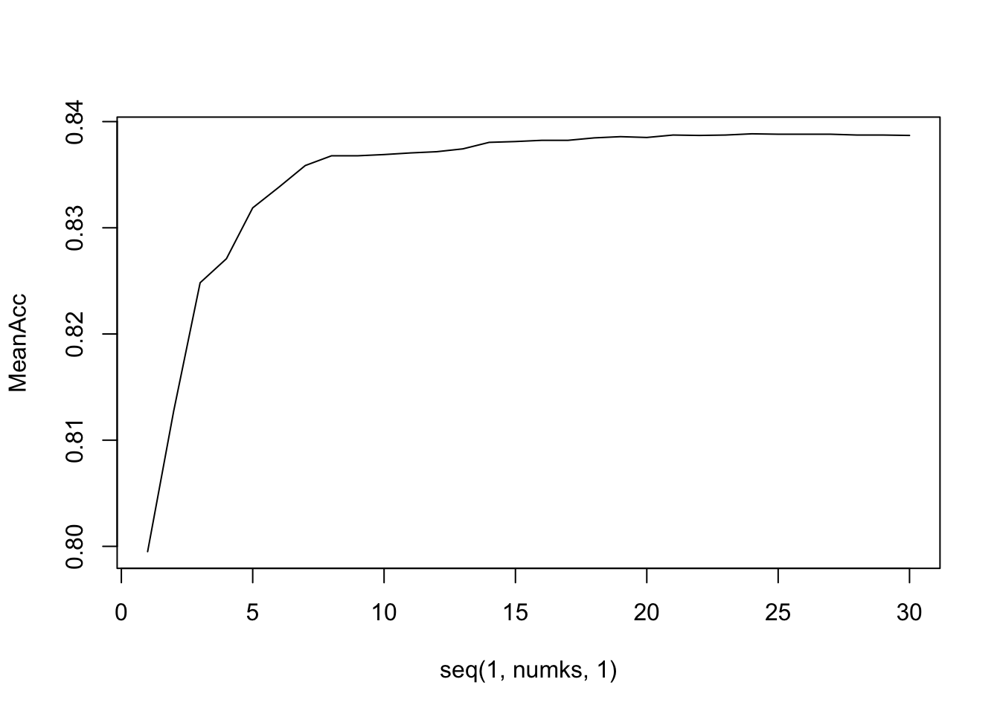

#Attrition and Income- Frito Lays
##Introduction Greetings! Today we will be discussing “Attrition and Income” too check what leads to attrition and income levels for talent management.
#Setting up the environment
#Loading in the required libraries
library(stringr)
library(dplyr)##
## Attaching package: 'dplyr'## The following objects are masked from 'package:stats':
##
## filter, lag## The following objects are masked from 'package:base':
##
## intersect, setdiff, setequal, unionlibrary(plyr)## -------------------------------------------------------------------------## You have loaded plyr after dplyr - this is likely to cause problems.
## If you need functions from both plyr and dplyr, please load plyr first, then dplyr:
## library(plyr); library(dplyr)## -------------------------------------------------------------------------##
## Attaching package: 'plyr'## The following objects are masked from 'package:dplyr':
##
## arrange, count, desc, failwith, id, mutate, rename, summarise,
## summarizelibrary(magrittr)
library(ggplot2)
library(tidyr)##
## Attaching package: 'tidyr'## The following object is masked from 'package:magrittr':
##
## extractlibrary(GGally)## Registered S3 method overwritten by 'GGally':
## method from
## +.gg ggplot2##
## Attaching package: 'GGally'## The following object is masked from 'package:dplyr':
##
## nasalibrary(ggalt)## Registered S3 methods overwritten by 'ggalt':
## method from
## grid.draw.absoluteGrob ggplot2
## grobHeight.absoluteGrob ggplot2
## grobWidth.absoluteGrob ggplot2
## grobX.absoluteGrob ggplot2
## grobY.absoluteGrob ggplot2library(mice)##
## Attaching package: 'mice'## The following objects are masked from 'package:base':
##
## cbind, rbindlibrary(e1071)
library(class)
library(caret)## Loading required package: lattice#Reading in the data
attritionData = read.csv("/Users/password1234/Documents/Doing_Data_Science/MSDS_6306_Doing-Data-Science/Unit\ 14\ and\ 15\ Case\ Study\ 2/CaseStudy2-data.csv", header = TRUE)
noAttritionData = read.csv("/Users/password1234/Documents/Doing_Data_Science/MSDS_6306_Doing-Data-Science/Unit\ 14\ and\ 15\ Case\ Study\ 2/CaseStudy2CompSet\ No\ Attrition.csv", header = TRUE)
noSalaryData = read.csv("/Users/password1234/Documents/Doing_Data_Science/MSDS_6306_Doing-Data-Science/Unit\ 14\ and\ 15\ Case\ Study\ 2/CaseStudy2CompSet\ No\ Salary.csv", header = TRUE)
#Get a look at the summary for the attrition data
summary(attritionData)## ID Age Attrition BusinessTravel
## Min. : 1.0 Min. :18.00 No :730 Non-Travel : 94
## 1st Qu.:218.2 1st Qu.:30.00 Yes:140 Travel_Frequently:158
## Median :435.5 Median :35.00 Travel_Rarely :618
## Mean :435.5 Mean :36.83
## 3rd Qu.:652.8 3rd Qu.:43.00
## Max. :870.0 Max. :60.00
##
## DailyRate Department DistanceFromHome
## Min. : 103.0 Human Resources : 35 Min. : 1.000
## 1st Qu.: 472.5 Research & Development:562 1st Qu.: 2.000
## Median : 817.5 Sales :273 Median : 7.000
## Mean : 815.2 Mean : 9.339
## 3rd Qu.:1165.8 3rd Qu.:14.000
## Max. :1499.0 Max. :29.000
##
## Education EducationField EmployeeCount EmployeeNumber
## Min. :1.000 Human Resources : 15 Min. :1 Min. : 1.0
## 1st Qu.:2.000 Life Sciences :358 1st Qu.:1 1st Qu.: 477.2
## Median :3.000 Marketing :100 Median :1 Median :1039.0
## Mean :2.901 Medical :270 Mean :1 Mean :1029.8
## 3rd Qu.:4.000 Other : 52 3rd Qu.:1 3rd Qu.:1561.5
## Max. :5.000 Technical Degree: 75 Max. :1 Max. :2064.0
##
## EnvironmentSatisfaction Gender HourlyRate JobInvolvement
## Min. :1.000 Female:354 Min. : 30.00 Min. :1.000
## 1st Qu.:2.000 Male :516 1st Qu.: 48.00 1st Qu.:2.000
## Median :3.000 Median : 66.00 Median :3.000
## Mean :2.701 Mean : 65.61 Mean :2.723
## 3rd Qu.:4.000 3rd Qu.: 83.00 3rd Qu.:3.000
## Max. :4.000 Max. :100.00 Max. :4.000
##
## JobLevel JobRole JobSatisfaction
## Min. :1.000 Sales Executive :200 Min. :1.000
## 1st Qu.:1.000 Research Scientist :172 1st Qu.:2.000
## Median :2.000 Laboratory Technician :153 Median :3.000
## Mean :2.039 Manufacturing Director : 87 Mean :2.709
## 3rd Qu.:3.000 Healthcare Representative: 76 3rd Qu.:4.000
## Max. :5.000 Sales Representative : 53 Max. :4.000
## (Other) :129
## MaritalStatus MonthlyIncome MonthlyRate NumCompaniesWorked Over18
## Divorced:191 Min. : 1081 Min. : 2094 Min. :0.000 Y:870
## Married :410 1st Qu.: 2840 1st Qu.: 8092 1st Qu.:1.000
## Single :269 Median : 4946 Median :14074 Median :2.000
## Mean : 6390 Mean :14326 Mean :2.728
## 3rd Qu.: 8182 3rd Qu.:20456 3rd Qu.:4.000
## Max. :19999 Max. :26997 Max. :9.000
##
## OverTime PercentSalaryHike PerformanceRating RelationshipSatisfaction
## No :618 Min. :11.0 Min. :3.000 Min. :1.000
## Yes:252 1st Qu.:12.0 1st Qu.:3.000 1st Qu.:2.000
## Median :14.0 Median :3.000 Median :3.000
## Mean :15.2 Mean :3.152 Mean :2.707
## 3rd Qu.:18.0 3rd Qu.:3.000 3rd Qu.:4.000
## Max. :25.0 Max. :4.000 Max. :4.000
##
## StandardHours StockOptionLevel TotalWorkingYears TrainingTimesLastYear
## Min. :80 Min. :0.0000 Min. : 0.00 Min. :0.000
## 1st Qu.:80 1st Qu.:0.0000 1st Qu.: 6.00 1st Qu.:2.000
## Median :80 Median :1.0000 Median :10.00 Median :3.000
## Mean :80 Mean :0.7839 Mean :11.05 Mean :2.832
## 3rd Qu.:80 3rd Qu.:1.0000 3rd Qu.:15.00 3rd Qu.:3.000
## Max. :80 Max. :3.0000 Max. :40.00 Max. :6.000
##
## WorkLifeBalance YearsAtCompany YearsInCurrentRole
## Min. :1.000 Min. : 0.000 Min. : 0.000
## 1st Qu.:2.000 1st Qu.: 3.000 1st Qu.: 2.000
## Median :3.000 Median : 5.000 Median : 3.000
## Mean :2.782 Mean : 6.962 Mean : 4.205
## 3rd Qu.:3.000 3rd Qu.:10.000 3rd Qu.: 7.000
## Max. :4.000 Max. :40.000 Max. :18.000
##
## YearsSinceLastPromotion YearsWithCurrManager
## Min. : 0.000 Min. : 0.00
## 1st Qu.: 0.000 1st Qu.: 2.00
## Median : 1.000 Median : 3.00
## Mean : 2.169 Mean : 4.14
## 3rd Qu.: 3.000 3rd Qu.: 7.00
## Max. :15.000 Max. :17.00
## summary(noAttritionData)## ID Age BusinessTravel DailyRate
## Min. :1171 Min. :19.00 Non-Travel : 32 Min. : 102.0
## 1st Qu.:1246 1st Qu.:31.00 Travel_Frequently: 57 1st Qu.: 448.0
## Median :1320 Median :36.00 Travel_Rarely :211 Median : 775.0
## Mean :1320 Mean :37.86 Mean : 784.8
## 3rd Qu.:1395 3rd Qu.:44.00 3rd Qu.:1117.0
## Max. :1470 Max. :60.00 Max. :1490.0
##
## Department DistanceFromHome Education
## Human Resources : 11 Min. : 1.00 Min. :1.000
## Research & Development:209 1st Qu.: 2.00 1st Qu.:2.000
## Sales : 80 Median : 7.00 Median :3.000
## Mean : 9.26 Mean :2.973
## 3rd Qu.:14.00 3rd Qu.:4.000
## Max. :29.00 Max. :5.000
##
## EducationField EmployeeCount EmployeeNumber
## Human Resources : 7 Min. :1 Min. : 2.0
## Life Sciences :130 1st Qu.:1 1st Qu.: 508.8
## Marketing : 27 Median :1 Median : 994.5
## Medical : 94 Mean :1 Mean :1020.9
## Other : 12 3rd Qu.:1 3rd Qu.:1542.5
## Technical Degree: 30 Max. :1 Max. :2065.0
##
## EnvironmentSatisfaction Gender HourlyRate JobInvolvement
## Min. :1.000 Female:105 Min. : 30.00 Min. :1.000
## 1st Qu.:2.000 Male :195 1st Qu.: 50.00 1st Qu.:2.000
## Median :3.000 Median : 66.00 Median :3.000
## Mean :2.733 Mean : 66.07 Mean :2.743
## 3rd Qu.:4.000 3rd Qu.: 83.00 3rd Qu.:3.000
## Max. :4.000 Max. :100.00 Max. :4.000
##
## JobLevel JobRole JobSatisfaction
## Min. :1.0 Research Scientist :61 Min. :1.000
## 1st Qu.:1.0 Sales Executive :57 1st Qu.:2.000
## Median :2.0 Laboratory Technician :55 Median :3.000
## Mean :2.2 Manufacturing Director :31 Mean :2.767
## 3rd Qu.:3.0 Manager :30 3rd Qu.:4.000
## Max. :5.0 Healthcare Representative:29 Max. :4.000
## (Other) :37
## MaritalStatus MonthlyIncome MonthlyRate NumCompaniesWorked Over18
## Divorced: 65 Min. : 1232 Min. : 2097 Min. :0.000 Y:300
## Married :128 1st Qu.: 3034 1st Qu.: 8420 1st Qu.:1.000
## Single :107 Median : 5208 Median :15091 Median :2.000
## Mean : 7103 Mean :14499 Mean :2.547
## 3rd Qu.: 9750 3rd Qu.:20330 3rd Qu.:4.000
## Max. :19973 Max. :26914 Max. :9.000
##
## OverTime PercentSalaryHike PerformanceRating RelationshipSatisfaction
## No :212 Min. :11.00 Min. :3.000 Min. :1.000
## Yes: 88 1st Qu.:12.00 1st Qu.:3.000 1st Qu.:2.000
## Median :14.00 Median :3.000 Median :3.000
## Mean :15.17 Mean :3.153 Mean :2.803
## 3rd Qu.:18.00 3rd Qu.:3.000 3rd Qu.:4.000
## Max. :25.00 Max. :4.000 Max. :4.000
##
## StandardHours StockOptionLevel TotalWorkingYears TrainingTimesLastYear
## Min. :80 Min. :0.0000 Min. : 0.00 Min. :0.000
## 1st Qu.:80 1st Qu.:0.0000 1st Qu.: 6.00 1st Qu.:2.000
## Median :80 Median :1.0000 Median :10.00 Median :2.000
## Mean :80 Mean :0.7833 Mean :12.44 Mean :2.683
## 3rd Qu.:80 3rd Qu.:1.0000 3rd Qu.:18.00 3rd Qu.:3.000
## Max. :80 Max. :3.0000 Max. :38.00 Max. :6.000
##
## WorkLifeBalance YearsAtCompany YearsInCurrentRole
## Min. :1.000 Min. : 0.000 Min. : 0.00
## 1st Qu.:2.000 1st Qu.: 3.000 1st Qu.: 2.00
## Median :3.000 Median : 5.000 Median : 3.00
## Mean :2.747 Mean : 7.527 Mean : 4.33
## 3rd Qu.:3.000 3rd Qu.:10.000 3rd Qu.: 7.00
## Max. :4.000 Max. :37.000 Max. :18.00
##
## YearsSinceLastPromotion YearsWithCurrManager
## Min. : 0.00 Min. : 0.00
## 1st Qu.: 0.00 1st Qu.: 2.00
## Median : 1.00 Median : 3.00
## Mean : 2.29 Mean : 4.38
## 3rd Qu.: 3.00 3rd Qu.: 7.00
## Max. :15.00 Max. :17.00
## ##Exploratory Data Analysis As part of the first step we would like to take a rough look at the data at hand. We want to do some intial analysis to see if anything catches our eye. Additionally, we will take a look at the data types for the variables to see what we are working with.
#View the data types for each variable we are dealing with
dplyr::glimpse(attritionData)## Observations: 870
## Variables: 36
## $ ID <int> 1, 2, 3, 4, 5, 6, 7, 8, 9, 10, 11, 12, …
## $ Age <int> 32, 40, 35, 32, 24, 27, 41, 37, 34, 34,…
## $ Attrition <fct> No, No, No, No, No, No, No, No, No, No,…
## $ BusinessTravel <fct> Travel_Rarely, Travel_Rarely, Travel_Fr…
## $ DailyRate <int> 117, 1308, 200, 801, 567, 294, 1283, 30…
## $ Department <fct> Sales, Research & Development, Research…
## $ DistanceFromHome <int> 13, 14, 18, 1, 2, 10, 5, 10, 10, 10, 6,…
## $ Education <int> 4, 3, 2, 4, 1, 2, 5, 4, 4, 4, 3, 2, 3, …
## $ EducationField <fct> Life Sciences, Medical, Life Sciences, …
## $ EmployeeCount <int> 1, 1, 1, 1, 1, 1, 1, 1, 1, 1, 1, 1, 1, …
## $ EmployeeNumber <int> 859, 1128, 1412, 2016, 1646, 733, 1448,…
## $ EnvironmentSatisfaction <int> 2, 3, 3, 3, 1, 4, 2, 4, 3, 4, 1, 3, 3, …
## $ Gender <fct> Male, Male, Male, Female, Female, Male,…
## $ HourlyRate <int> 73, 44, 60, 48, 32, 32, 90, 88, 87, 92,…
## $ JobInvolvement <int> 3, 2, 3, 3, 3, 3, 4, 2, 3, 2, 2, 3, 3, …
## $ JobLevel <int> 2, 5, 3, 3, 1, 3, 1, 2, 1, 2, 5, 1, 3, …
## $ JobRole <fct> Sales Executive, Research Director, Man…
## $ JobSatisfaction <int> 4, 3, 4, 4, 4, 1, 3, 4, 3, 3, 3, 4, 3, …
## $ MaritalStatus <fct> Divorced, Single, Single, Married, Sing…
## $ MonthlyIncome <int> 4403, 19626, 9362, 10422, 3760, 8793, 2…
## $ MonthlyRate <int> 9250, 17544, 19944, 24032, 17218, 4809,…
## $ NumCompaniesWorked <int> 2, 1, 2, 1, 1, 1, 2, 2, 1, 1, 7, 1, 3, …
## $ Over18 <fct> Y, Y, Y, Y, Y, Y, Y, Y, Y, Y, Y, Y, Y, …
## $ OverTime <fct> No, No, No, No, Yes, No, Yes, Yes, Yes,…
## $ PercentSalaryHike <int> 11, 14, 11, 19, 13, 21, 12, 14, 19, 14,…
## $ PerformanceRating <int> 3, 3, 3, 3, 3, 4, 3, 3, 3, 3, 3, 3, 4, …
## $ RelationshipSatisfaction <int> 3, 1, 3, 3, 3, 3, 1, 3, 4, 2, 4, 2, 2, …
## $ StandardHours <int> 80, 80, 80, 80, 80, 80, 80, 80, 80, 80,…
## $ StockOptionLevel <int> 1, 0, 0, 2, 0, 2, 0, 3, 1, 1, 0, 1, 0, …
## $ TotalWorkingYears <int> 8, 21, 10, 14, 6, 9, 7, 8, 1, 8, 21, 3,…
## $ TrainingTimesLastYear <int> 3, 2, 2, 3, 2, 4, 5, 5, 2, 3, 2, 2, 3, …
## $ WorkLifeBalance <int> 2, 4, 3, 3, 3, 2, 2, 3, 3, 2, 3, 3, 4, …
## $ YearsAtCompany <int> 5, 20, 2, 14, 6, 9, 4, 1, 1, 8, 16, 3, …
## $ YearsInCurrentRole <int> 2, 7, 2, 10, 3, 7, 2, 0, 1, 2, 12, 2, 5…
## $ YearsSinceLastPromotion <int> 0, 4, 2, 5, 1, 1, 0, 0, 0, 7, 6, 2, 1, …
## $ YearsWithCurrManager <int> 3, 9, 2, 7, 3, 7, 3, 0, 0, 7, 14, 2, 6,…#Separate the numerical and categorical variables in the dataframe
sapply(attritionData, is.factor)## ID Age Attrition
## FALSE FALSE TRUE
## BusinessTravel DailyRate Department
## TRUE FALSE TRUE
## DistanceFromHome Education EducationField
## FALSE FALSE TRUE
## EmployeeCount EmployeeNumber EnvironmentSatisfaction
## FALSE FALSE FALSE
## Gender HourlyRate JobInvolvement
## TRUE FALSE FALSE
## JobLevel JobRole JobSatisfaction
## FALSE TRUE FALSE
## MaritalStatus MonthlyIncome MonthlyRate
## TRUE FALSE FALSE
## NumCompaniesWorked Over18 OverTime
## FALSE TRUE TRUE
## PercentSalaryHike PerformanceRating RelationshipSatisfaction
## FALSE FALSE FALSE
## StandardHours StockOptionLevel TotalWorkingYears
## FALSE FALSE FALSE
## TrainingTimesLastYear WorkLifeBalance YearsAtCompany
## FALSE FALSE FALSE
## YearsInCurrentRole YearsSinceLastPromotion YearsWithCurrManager
## FALSE FALSE FALSE#Categorical variables only
categoricalVar = attritionData[,sapply(attritionData, is.factor)]
summary(categoricalVar)## Attrition BusinessTravel Department
## No :730 Non-Travel : 94 Human Resources : 35
## Yes:140 Travel_Frequently:158 Research & Development:562
## Travel_Rarely :618 Sales :273
##
##
##
##
## EducationField Gender JobRole
## Human Resources : 15 Female:354 Sales Executive :200
## Life Sciences :358 Male :516 Research Scientist :172
## Marketing :100 Laboratory Technician :153
## Medical :270 Manufacturing Director : 87
## Other : 52 Healthcare Representative: 76
## Technical Degree: 75 Sales Representative : 53
## (Other) :129
## MaritalStatus Over18 OverTime
## Divorced:191 Y:870 No :618
## Married :410 Yes:252
## Single :269
##
##
##
## #Numerical variables only
numericalVar = attritionData[,!sapply(attritionData, is.factor)]
summary(numericalVar)## ID Age DailyRate DistanceFromHome
## Min. : 1.0 Min. :18.00 Min. : 103.0 Min. : 1.000
## 1st Qu.:218.2 1st Qu.:30.00 1st Qu.: 472.5 1st Qu.: 2.000
## Median :435.5 Median :35.00 Median : 817.5 Median : 7.000
## Mean :435.5 Mean :36.83 Mean : 815.2 Mean : 9.339
## 3rd Qu.:652.8 3rd Qu.:43.00 3rd Qu.:1165.8 3rd Qu.:14.000
## Max. :870.0 Max. :60.00 Max. :1499.0 Max. :29.000
## Education EmployeeCount EmployeeNumber EnvironmentSatisfaction
## Min. :1.000 Min. :1 Min. : 1.0 Min. :1.000
## 1st Qu.:2.000 1st Qu.:1 1st Qu.: 477.2 1st Qu.:2.000
## Median :3.000 Median :1 Median :1039.0 Median :3.000
## Mean :2.901 Mean :1 Mean :1029.8 Mean :2.701
## 3rd Qu.:4.000 3rd Qu.:1 3rd Qu.:1561.5 3rd Qu.:4.000
## Max. :5.000 Max. :1 Max. :2064.0 Max. :4.000
## HourlyRate JobInvolvement JobLevel JobSatisfaction
## Min. : 30.00 Min. :1.000 Min. :1.000 Min. :1.000
## 1st Qu.: 48.00 1st Qu.:2.000 1st Qu.:1.000 1st Qu.:2.000
## Median : 66.00 Median :3.000 Median :2.000 Median :3.000
## Mean : 65.61 Mean :2.723 Mean :2.039 Mean :2.709
## 3rd Qu.: 83.00 3rd Qu.:3.000 3rd Qu.:3.000 3rd Qu.:4.000
## Max. :100.00 Max. :4.000 Max. :5.000 Max. :4.000
## MonthlyIncome MonthlyRate NumCompaniesWorked PercentSalaryHike
## Min. : 1081 Min. : 2094 Min. :0.000 Min. :11.0
## 1st Qu.: 2840 1st Qu.: 8092 1st Qu.:1.000 1st Qu.:12.0
## Median : 4946 Median :14074 Median :2.000 Median :14.0
## Mean : 6390 Mean :14326 Mean :2.728 Mean :15.2
## 3rd Qu.: 8182 3rd Qu.:20456 3rd Qu.:4.000 3rd Qu.:18.0
## Max. :19999 Max. :26997 Max. :9.000 Max. :25.0
## PerformanceRating RelationshipSatisfaction StandardHours StockOptionLevel
## Min. :3.000 Min. :1.000 Min. :80 Min. :0.0000
## 1st Qu.:3.000 1st Qu.:2.000 1st Qu.:80 1st Qu.:0.0000
## Median :3.000 Median :3.000 Median :80 Median :1.0000
## Mean :3.152 Mean :2.707 Mean :80 Mean :0.7839
## 3rd Qu.:3.000 3rd Qu.:4.000 3rd Qu.:80 3rd Qu.:1.0000
## Max. :4.000 Max. :4.000 Max. :80 Max. :3.0000
## TotalWorkingYears TrainingTimesLastYear WorkLifeBalance YearsAtCompany
## Min. : 0.00 Min. :0.000 Min. :1.000 Min. : 0.000
## 1st Qu.: 6.00 1st Qu.:2.000 1st Qu.:2.000 1st Qu.: 3.000
## Median :10.00 Median :3.000 Median :3.000 Median : 5.000
## Mean :11.05 Mean :2.832 Mean :2.782 Mean : 6.962
## 3rd Qu.:15.00 3rd Qu.:3.000 3rd Qu.:3.000 3rd Qu.:10.000
## Max. :40.00 Max. :6.000 Max. :4.000 Max. :40.000
## YearsInCurrentRole YearsSinceLastPromotion YearsWithCurrManager
## Min. : 0.000 Min. : 0.000 Min. : 0.00
## 1st Qu.: 2.000 1st Qu.: 0.000 1st Qu.: 2.00
## Median : 3.000 Median : 1.000 Median : 3.00
## Mean : 4.205 Mean : 2.169 Mean : 4.14
## 3rd Qu.: 7.000 3rd Qu.: 3.000 3rd Qu.: 7.00
## Max. :18.000 Max. :15.000 Max. :17.00#Lets look at a rough analysis on multiple different columns to see if we can figure something out
attritionData %>% select(Attrition, JobRole, MonthlyIncome) %>% ggpairs(aes(color = Attrition))## `stat_bin()` using `bins = 30`. Pick better value with `binwidth`.
## `stat_bin()` using `bins = 30`. Pick better value with `binwidth`.
attritionData %>% select(MonthlyIncome, Education, TotalWorkingYears, Attrition) %>% ggpairs(mapping = aes(color = Attrition)) + ggtitle("Monthly Income vs Education, Experience, and Attrition")## `stat_bin()` using `bins = 30`. Pick better value with `binwidth`.
## `stat_bin()` using `bins = 30`. Pick better value with `binwidth`.
## `stat_bin()` using `bins = 30`. Pick better value with `binwidth`.
attritionData %>% select(MonthlyIncome, YearsAtCompany, TotalWorkingYears, YearsInCurrentRole, OverTime) %>% ggpairs(mapping = aes(color = OverTime)) + ggtitle("Monthly Income vs Years in Industry by Overtime")## `stat_bin()` using `bins = 30`. Pick better value with `binwidth`.
## `stat_bin()` using `bins = 30`. Pick better value with `binwidth`.
## `stat_bin()` using `bins = 30`. Pick better value with `binwidth`.
## `stat_bin()` using `bins = 30`. Pick better value with `binwidth`.
#Lets look at if Monthyly income and Job Role play a role in determining Attrition
attritionData %>% ggplot(aes(x = JobRole, y = MonthlyIncome, fill = Attrition)) + geom_bar(stat = "identity", width = .5) + labs(title = "Income", subtitle = "along with Attrition") + theme(axis.text.x = element_text(angle = 65, vjust = 0.6))
attritionData %>% ggplot(aes(x = MonthlyIncome, y = YearsAtCompany, color = JobRole)) + geom_point(position = "jitter") At a glance, it looks like a common variable that influences Attrition as well as monthly income is Total Working Years (experience). There is a moderate correlation between Monthly Income and Years at company along with attrition.
#ScatterPlot for trends
attritionData %>% ggplot(aes(x = MonthlyIncome, y = Education)) + geom_point(position = "jitter")
attritionData %>% ggplot(aes(x = Age, y = Attrition)) + geom_point(position = "jitter")
#Need to dummy code Attrition
attritionData$AttritionNum = str_replace(attritionData$Attrition, "No", "0")
attritionData$AttritionNum = str_replace(attritionData$AttritionNum, "Yes", "1")
attritionData$AttritionNum = as.integer(attritionData$AttritionNum)
noAttr = noAttritionData %>% select(ID, WorkLifeBalance, JobInvolvement, YearsAtCompany)
attritionData %>% ggplot(aes(x = Attrition)) + geom_bar()#Lets do KNN
case = attritionData %>% select(ID, WorkLifeBalance, JobInvolvement, YearsAtCompany, Attrition)
att = data_frame(WorkLifeBalance = 2, JobInvolvement = 1, YearsAtCompany = 5)## Warning: `data_frame()` is deprecated, use `tibble()`.
## This warning is displayed once per session.knn(case[,c(2,3,4)], att, case$Attrition, k = 3, prob = TRUE)## [1] No
## attr(,"prob")
## [1] 0.8333333
## Levels: No Yesattr_pred = knn(case[,c(2,3,4)], noAttr[,c(2,3,4)], case$Attrition, k = 19, prob = TRUE)
noAttr$Attrition = attr_pred
table(attr_pred, noAttr$Attrition)##
## attr_pred No Yes
## No 300 0
## Yes 0 0noAttr = noAttr[,-5]
#Train Data and Test Set
set.seed(6)
splitPerc = .70
trainIndices = sample(1:dim(case)[1], round(splitPerc * dim(case)[1]))
train = case[trainIndices,]
test = case[-trainIndices,]
#K = 3
classifications = knn(train[,2:4], test[,2:4], train$Attrition, k = 3, prob = TRUE)
table(classifications, test$Attrition)##
## classifications No Yes
## No 211 41
## Yes 7 2confusionMatrix(table(classifications, test$Attrition))## Confusion Matrix and Statistics
##
##
## classifications No Yes
## No 211 41
## Yes 7 2
##
## Accuracy : 0.8161
## 95% CI : (0.7637, 0.8612)
## No Information Rate : 0.8352
## P-Value [Acc > NIR] : 0.8215
##
## Kappa : 0.0211
##
## Mcnemar's Test P-Value : 1.906e-06
##
## Sensitivity : 0.96789
## Specificity : 0.04651
## Pos Pred Value : 0.83730
## Neg Pred Value : 0.22222
## Prevalence : 0.83525
## Detection Rate : 0.80843
## Detection Prevalence : 0.96552
## Balanced Accuracy : 0.50720
##
## 'Positive' Class : No
## #K = 7
classifications = knn(train[,2:4], test[,2:4], train$Attrition, k = 7, prob = TRUE)
table(classifications, test$Attrition)##
## classifications No Yes
## No 214 43
## Yes 4 0confusionMatrix(table(classifications, test$Attrition))## Confusion Matrix and Statistics
##
##
## classifications No Yes
## No 214 43
## Yes 4 0
##
## Accuracy : 0.8199
## 95% CI : (0.7678, 0.8646)
## No Information Rate : 0.8352
## P-Value [Acc > NIR] : 0.7761
##
## Kappa : -0.0289
##
## Mcnemar's Test P-Value : 2.976e-08
##
## Sensitivity : 0.9817
## Specificity : 0.0000
## Pos Pred Value : 0.8327
## Neg Pred Value : 0.0000
## Prevalence : 0.8352
## Detection Rate : 0.8199
## Detection Prevalence : 0.9847
## Balanced Accuracy : 0.4908
##
## 'Positive' Class : No
## #k=13
classifications = knn(train[,2:4], test[,2:4], train$Attrition, k = 13, prob = TRUE)
table(classifications, test$Attrition)##
## classifications No Yes
## No 218 43
## Yes 0 0confusionMatrix(table(classifications, test$Attrition))## Confusion Matrix and Statistics
##
##
## classifications No Yes
## No 218 43
## Yes 0 0
##
## Accuracy : 0.8352
## 95% CI : (0.7846, 0.8781)
## No Information Rate : 0.8352
## P-Value [Acc > NIR] : 0.5406
##
## Kappa : 0
##
## Mcnemar's Test P-Value : 1.504e-10
##
## Sensitivity : 1.0000
## Specificity : 0.0000
## Pos Pred Value : 0.8352
## Neg Pred Value : NaN
## Prevalence : 0.8352
## Detection Rate : 0.8352
## Detection Prevalence : 1.0000
## Balanced Accuracy : 0.5000
##
## 'Positive' Class : No
## #Now going to loop through more than one k and find the average
iterations = 100
set.seed(6)
numks = 30
masterAcc = matrix(nrow = iterations, ncol = numks)
kkk = c()
Sens = c()
Spec = c()
for(j in 1:iterations)
{
accs = data.frame(accuracy = numeric(30), k = numeric(30))
trainIndices = sample(1:dim(case)[1], round(splitPerc * dim(case)[1]))
train = case[trainIndices,]
test = case[-trainIndices,]
for(i in 1:numks)
{
classifications = knn(train[, c(2:4)], test[, c(2:4)], train$Attrition, prob = TRUE, k = i)
table(classifications, test$Attrition)
CM = confusionMatrix(table(classifications,test$Attrition))
masterAcc[j,i] = CM$overall[1]
kkk[i] = CM$overall[1]
Sens[i] = CM$byClass[1]
Spec[i] = CM$byClass[2]
}
}
MeanAcc = colMeans(masterAcc)
plot(seq(1,numks,1),MeanAcc, type = "l")
combo = data_frame(k = 1:30, Accuracy = kkk ,Sensitivity = Sens, Specificity = Spec, MeanAcc)#linear models for Salaries (on attrition data before the split)
reg = lm(MonthlyIncome~Education, attritionData)
reg2 = lm(MonthlyIncome~TotalWorkingYears, attritionData)
mReg = lm(MonthlyIncome~TotalWorkingYears + Education, attritionData)
#Test with just two observations
df = data.frame(TotalWorkingYears = 10, Education = 4)
#Create new Data Frame with just experience and education to predict salary for each person
EduTotal = noSalaryData %>% select(ID,TotalWorkingYears, Education)
#Prediction
pred = predict(mReg, newdata = df, interval = "confidence")
pred2 = predict(mReg, newdata = EduTotal)
#New Column with Preds
EduTotal$MonthlySalary = pred2
EduTotal$MonthlySalary = as.integer(EduTotal$MonthlySalary)
#Validation Set
vReg = lm(MonthlySalary~TotalWorkingYears + Education, EduTotal)
vReg##
## Call:
## lm(formula = MonthlySalary ~ TotalWorkingYears + Education, data = EduTotal)
##
## Coefficients:
## (Intercept) TotalWorkingYears Education
## 958.95 475.15 61.72confint(mReg)## 2.5 % 97.5 %
## (Intercept) 345.8562 1573.1148
## TotalWorkingYears 449.2816 501.0241
## Education -128.3201 251.7017#Residual Sum of Squares
RSS = c(crossprod(vReg$residuals))
#Mean Squared Error
MSE = RSS / length(vReg$residuals)
#Root MSE
RMSE = sqrt(MSE)#Split data to train and test
set.seed(6)
splitPerc = .70
trainIndices = sample(1:dim(attritionData)[1], round(splitPerc * dim(attritionData)[1]))
train = attritionData[trainIndices,]
test = attritionData[-trainIndices,]
#Linear Reg on Training Model
fit = lm(MonthlyIncome~TotalWorkingYears + Education, train)
#Linear Reg on Testing Model
fit2 = lm(MonthlyIncome~TotalWorkingYears + Education, test)
#Train Residual Sum of Squares
RSS_T = c(crossprod(fit$residuals))
#Train Mean Squared Error
MSE_T = RSS_T / length(fit$residuals)
#Train Root MSE
RMSE_T = sqrt(MSE_T)
#Test Residual Sum of Squares
RSS_Te = c(crossprod(fit2$residuals))
#Test Mean Squared Error
MSE_Te = RSS_Te / length(fit2$residuals)
#Test Root MSE
RMSE_Te = sqrt(MSE_Te)